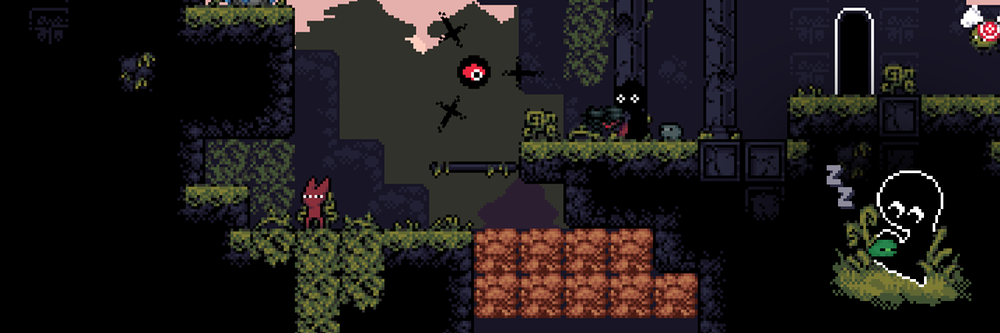

The Story behind Another Platformer
The Old God has Come
Your planet has been overtaken by the elusive The Old God. Known long ago as The Keeper of the Dead, the Old God has now taken occupancy on a planet known to attract spirits of the universe. Their reign and disruption of the life on this planet has shattered the balance of Soul and Spirit that threatens the universe itself.
Birthed from the steady drip of Soul, you, Young Echo, miraculously manifest yourself into this world. Your body is frail and the language is foreign, so you'll need some help from others to find your way and to exile the Old God back into the oblivion of space.
Learn the Tricks of the Trade
This planet is full of undiscovered treasures and forgotten relics. Master 9 unique weapons and harness their full potential by leveling them up to the max to unleash a devastating special attack. But be warned, your confidence in these weapons waver when taking damage, losing precious levels. Some weapons can be combined to make unique tools of decimation to get the upper hand.
Decipher a Lost Language
Many secrets lay untouched behind a cryptic language of glyphs and pictograms. Learn the language as you progress through this strange world and make new friends. Your knowledge of the language unlocks new secrets and challenges with worth while rewards.
Save Your New Home from Certain Destruction
It is up to you and the friends you make along the way to save all life on a planet you were literally born yesterday on.
Also there are frogs. :)
